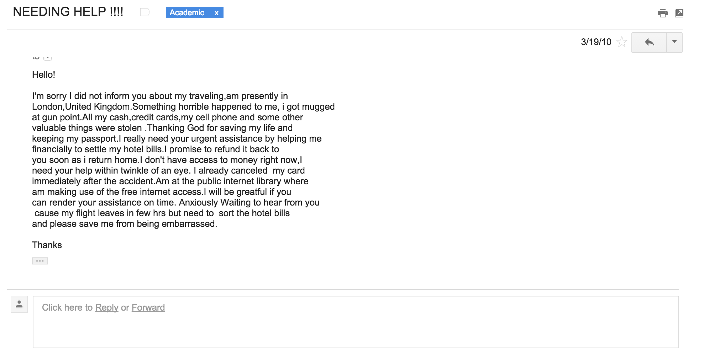

Your browser doesn't support the features required by impress.js, so you are presented with a simplified version of this presentation.
For the best experience please use the latest Chrome, Safari or Firefox browser.
COMP 116: Introduction to Computer Security
Information Security Without a Computer
Ming Chow
Please put away all laptops, silent cell phones
Today: we will play a game "What Would You Do" (WWYD)
Scenario 1: You want to make a surprise visit to your signficant other. The problem: you need an ID to gain access into the building where your significant other is.
Scenario 2: You received an email from a close friend. The email reads that something horrible happened to your friend. Your friend got mugged at gun point: all cash, credit cards, cell phone, and some other valuable things were stolen. Your friend would be greatful if you can render some monetary assistance on time.
Scenario 3: You find a SanDisk 32 GB SD card drive on the ground with the label "Financial" on it.
Scenario 4: There are high resolution edited and unedited photos of a person of interest online through an agency. However, a password is required to view the photos --no username required.
Scenario 5: A local institution will be closing its doors forever in a matter of days.
Scenario 6: You are visiting a major institution in the Boston area to give a talk. When you arrive at the institution, you notice that you are not being escorted around premises.
What's the point of these scenarios? To make you think like a bad guy.
Q: Why is thinking like a bad guy important in information security?
What this is: social engineering
Definition: "a non-technical method of intrusion hackers use that relies heavily on human interaction and often involves tricking people into breaking normal security procedures. It is one of the greatest threats that organizations today encounter." (http://searchsecurity.techtarget.com/definition/social-engineering)
The scenarios are real

How Your Data Was Lost (from Wired Magazine; 2/2007)
Social Engineering Techniques
Tools and Pawns
Q: If you were an information security professional, what would you do to prevent the result of the scenarios from happening?
Security Policies
Security Policy Requirements
Takeaways and next steps
Use a spacebar or arrow keys to navigate